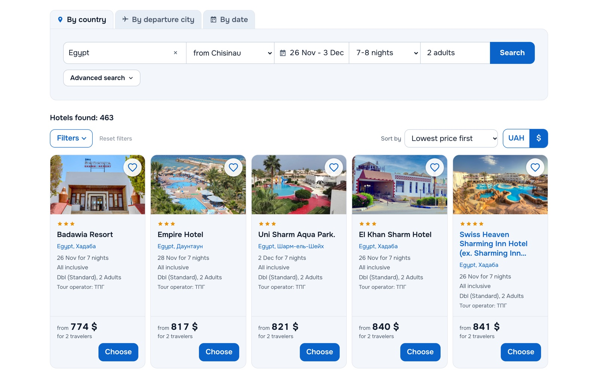

Anatolii Marchenko
Full-stack developer. I build web products end to end, from the first schema to production.
Most of my work is PHP and Laravel on the backend, Vue and TypeScript on the frontend, PostgreSQL underneath, and integrations with other companies' APIs that rarely behave the way their documentation says. I build with Claude Code as an engineering team: spec first, then a plan, then subagent-driven development with review at every step.
Selected work

TourSearch
A tour search platform that queries several tour operators at once and merges their offers into one list of hotels. Embeds on any travel agency site with two lines of HTML; agencies sign up and run it themselves.
Read the case studyBackend
Laravel applications with clear domain boundaries, queues and background jobs, PostgreSQL schemas built for the queries that matter, and tests that catch the quiet failures.
Integrations
XML and SOAP services, rate limits, huge or inconsistent responses, retries that do not take the rest of the system down with them.
Frontend and delivery
Vue and TypeScript interfaces, embeddable widgets that survive any host page, Docker, CI and continuous delivery to production.
AI-assisted engineering
Claude Code with spec-first, subagent-driven development (SDD): every task is implemented by a subagent and reviewed against the spec before the next one starts. Project rules in CLAUDE.md, parallel sessions in git worktrees, decisions logged with their reasons, and tests and CI as the gate.
Get in touch
Have a product to build or an integration that keeps breaking? Write to me.